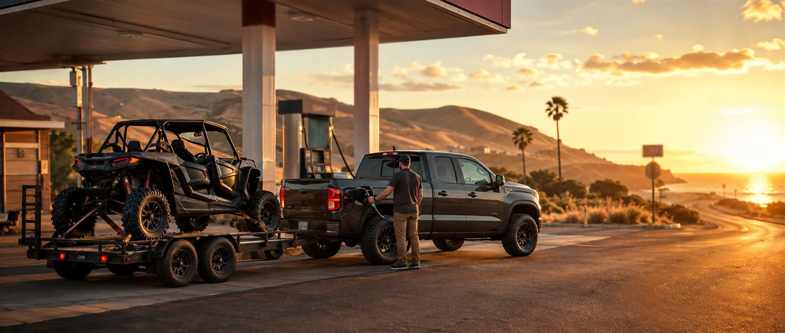

Gas Prices Near the Dunes
San Luis Obispo County averages, updated a few times daily from AAA. Tow rigs are thirsty and the last stops before the sand run above average, so know the number before the pump surprises you.
Loading current averages…
County-wide averages for the San Luis Obispo–Atascadero–Paso Robles area from AAA Gas Prices. Individual stations vary; the pumps closest to the beach typically run above these averages.
Where to Fill Up
Best Bet: Fill Before the 101
Prices drop the further you get from the beach. Coming down the 101, top off in Santa Maria or Arroyo Grande before heading west; beach-adjacent stations know they're your last chance and price like it.
Last Stop With Fuel + Supplies
The Flyers station at 684 W Grand Ave in Grover Beach is fuel plus a full liquor store in one stop, about a mile from the sand. Pair it with Vons down the street for the full grocery run. More on the supplies guide.
Don't Forget the Toys
There is no fuel on the beach. Fill your quads, cans, and the tow rig before you air down; a supply run off the sand means airing up, driving out, and airing back down. Budget one gallon of spare fuel per machine per day minimum.